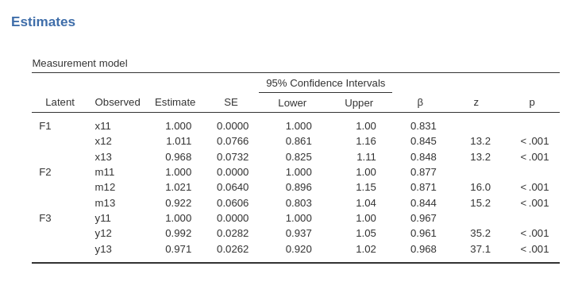

Confirmatory Factor Analysis
keywords SEM, confirmatory analysis, mediation, lavaan, SEMLj, jamovi
0.7.0
In this example, we demonstrate how to estimate a simple confirmatory factor analysis using SEMLj. It’s important to note that jamovis default commands allow you to perform a confirmatory factor analysis without requiring any additional modules. This can be easily done via Factor -> Confirmatory Factor Analysis. However, there are instances where users may prefer to use SEMLj for confirmatory factor analysis. This could be due to the need for preliminary analysis before building more complex structural models, the desire to utilize specific options available in the SEMLj, or simply to cross-check the results.
We show input of SEMLj syntax sub-module and interactive sub-module, with particular focus on the latter one. We focus more on the setup of the model (how to run it) and less on the interpretation of the results, as we think that when you have run such a model, you know how to interpret it.
Much of the output that SEMLj produces is labeled as it is in lavaan R package output, so lots of information can be found in lavaan help and tutorials.
The data
For this example we are going to use the secondorder
dataset present in jamovi
data library after installing SEMLj. The
data are generated to feature 27 observed variables for 200 cases.
The model
Assume we have three latent factors, F1, F2
and F3. Assume that each of these factors is measured by
three observed variables:
- F1: x11, x12, x13
- F2: m11, m12, m13
- F3: y11, y12, y13
Basically, we want to estimate the following model:
Interactive (GUI)
Let’s start with the interactive module. In Latent Endogenous Variables (aka factors) we name each factor and put the observed variables measuring it in the field beneath.

and we keep defining the factors with their indicators
until we have three of them. We can see in the Model Info output table that the factors are defined as intended.
Syntax
In the syntax sub-module we can define the three factors in terms of their indicators as follows
We are not going to discuss the output of the syntax sub-module because it is identical to the interactive sub-module output.
Output
As soon as we set the input, we obtain the whole set of results tables. We do not go through the results in detail, but it is interesting to see the basic results
The overall tests are presented in the first three tables. We can use
them to compare the results with jamovi CFA command results
(see below).

As regards the measurement model table (factor loadings), it indicates the associations between the observed variables and the factors. We can notice that the first indicator of each factor shows a factor loading equal to 1. This is one of the possible ways of setting the latent variable scale. We’ll see that jamovi CFA has a different default, which can be changed to align the results to the ones obtained here (see below). In SEMLj, the scale option is in the Parameters Options panel.
As regards the variances and covariances, we can notice that the three factors are let to be correlated (see bottom part of the table). This happens because the default option in Variances and Covariances panel: Correlated -> Latent vars .
This is basically a CFA run in SEMLj. All options of the module are available, so one can start tweaking the model as required by the researcher interests and aims.
jamovi CFA
We can now check the results using jamovi CFA default command.
First, we setup the three factors as we did in SEMLj.
Then we scale the factor fixing the first indicator loading to 1.
Output
We can see that the results are exactly the same of the ones obtained with SEMLj.
The fit indices are the same:
the factor loadings (Estimates and standard errors) are the same:
and so are the variances and covariances among factors:
Note: Scaling Latent Variables
Scaling latent variables is necessary for the model to be identified, but the method one uses matters only in terms of convenience, because the actual model results are equivalent (apart from the scale of the latent variables). SEMLj default method is to set the first indicator loading equal to zero, whereas CFA default sets the variance of the latent variable equal to 1. If one to use the latter method in SEMLj, simply choose the Latent vars: Fix residual variances (to 1) option in Parameters Options panel.
Examples
Some worked out practical examples can be found here
Comments?
Got comments, issues or spotted a bug? Please open an issue on SEMLj at github or send me an email